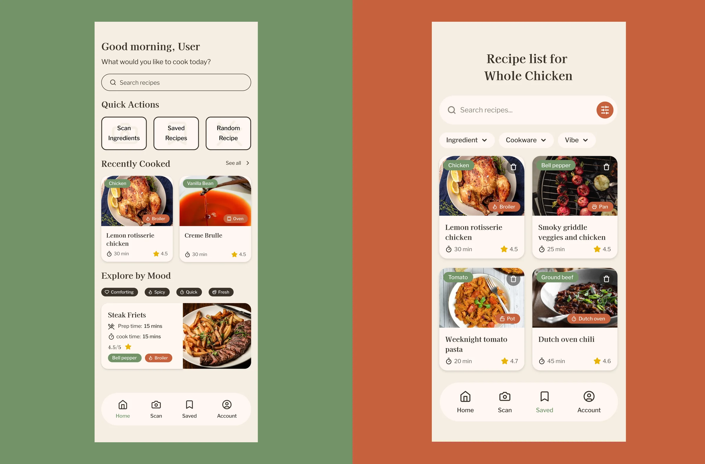
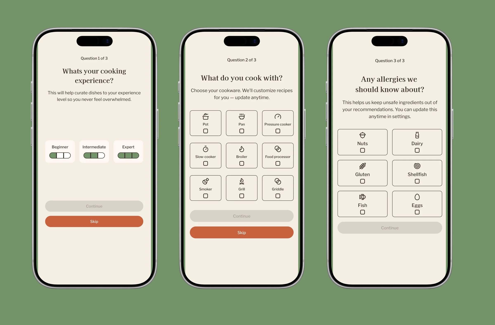
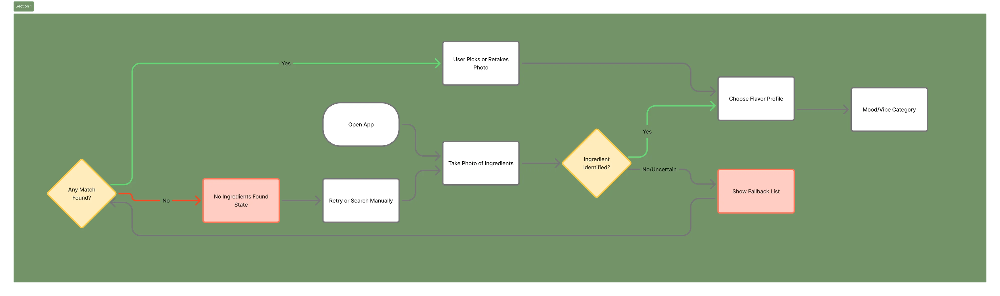
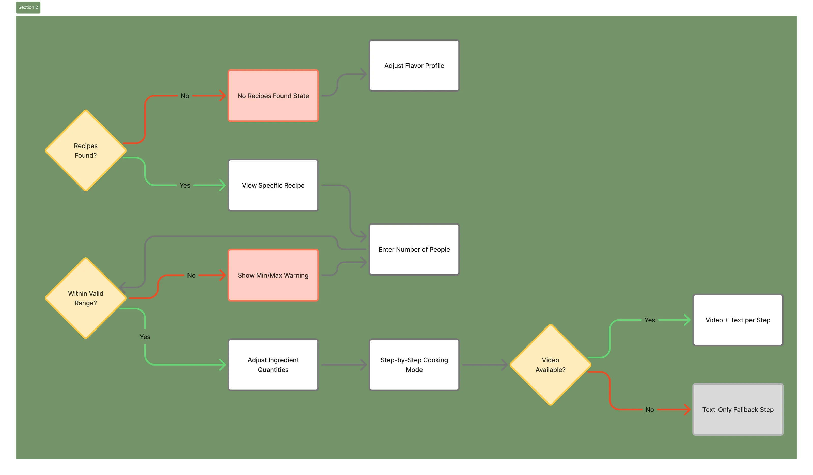

Concept project — iOS app
ShutterPlate
A step-by-step cooking app that starts with what's already in your fridge — concept through interactive Figma prototype.

01 — Overview
ShutterPlate is a step-by-step cooking app that starts with what's already in your fridge. You photograph your ingredients, the app identifies them, you pick a mood or vibe for how you want to eat, and it surfaces recipes that adapt to your servings and the equipment you actually own. Cooking happens in a distraction-free, one-step-at-a-time mode that pairs short video clips with clear instructions.
The goal was a product that earns a place on your home screen — not by being clever, but by being genuinely useful every time you cook.
02 — The problem
Recipe apps have a paradox: they're built for people who already know what they want to cook. Browse any major app and the first question they ask you is a cuisine, a dish name, or a search term. But the most common real-world scenario is different — you have some chicken thighs, half a can of coconut milk, and a lime. You don't know what you're making yet.
At the same time, cooking apps tend to abandon you mid-cook. They show you a list of steps, maybe a photo at the top, and expect you to context-switch between the recipe and your stovetop. The steps-in-a-list format is a print convention transplanted onto a touchscreen without rethinking it.
ShutterPlate was designed to answer both of these problems with one connected flow.
03 — Goals
Make ingredient-first cooking the default entry point, not a feature buried in search filters. Replace cuisine-based filtering — which requires you to already know what you want — with mood and vibe-based selection. Build a cooking mode that earns its own screen: full focus, one step at a time. And create a brand that feels warm and approachable without feeling rustic or low-fi.

04 — Key design decisions
Mood over taxonomy. Appetite over category.
The typical recipe filter pattern asks: what cuisine do you want? That's the wrong question when you're staring at a pile of ingredients. Cuisine taxonomies are also imprecise — is a coconut curry Thai or Indian? Does it matter?
ShutterPlate replaces the cuisine filter entirely with a mood and vibe selector: 12 tiles that capture how you want to eat, not how a dish should be categorized. Tiles like "light and fresh," "rich and comforting," and "bold and spicy" let people describe their appetite, not navigate a taxonomy. The flavor selection screen requires a choice before Continue is enabled — it's not optional — because the mood truly drives what you get back.
05 — The camera as home
Most recipe apps open to a social feed or a curated homepage. ShutterPlate's home screen is built around taking action: the primary CTA is scanning ingredients. Everything else — saved recipes, account, recent history — is secondary.
The camera UI follows native iOS conventions closely, because familiarity reduces friction at the moment of first intent. Two flows handle both states explicitly: Ingredient Found continues the flow, and Ingredient Not Found shows a likely-match list with a retry option — making the fallback a designed experience rather than a dead end.
06 — Onboarding
The onboarding sequence collects three things: skill level, cookware and equipment, and allergies. The first two are skippable — they improve results but aren't required. Allergies are mandatory with no skip option, because surfacing a recipe containing a severe allergen would be genuinely harmful.
The disclaimer copy on the allergy step is intentionally muted — it doesn't shout, it just clarifies. The goal was to communicate seriousness without creating alarm, and to be transparent that this data shapes what you see. Getting that right builds trust at the moment users are most skeptical.

07 — Card design
In the recipe list, cards show prep time and cook time — the two things people actually use to choose. Author attribution moved to the recipe detail page. This keeps the list scannable and removes a piece of information that doesn't help someone decide whether a recipe fits their evening.
It's a small call, but it reflects a broader principle: every element on a card earns its place by helping someone decide. Everything else is noise.
08 — Cooking mode
Step-by-step cooking modes are common in recipe apps, but often feel bolted on. ShutterPlate's Cooking Mode is full-screen and focus-only. Each step shows exactly one instruction, the relevant ingredient chips for that step, and a short video clip. There's no recipe list visible, no navigation chrome, and no way to accidentally leave.
The progress bar and step counter orient you within the recipe without cluttering the step itself. A persistent Exit link returns you to Recipe Details if you need to look something up, and a Finish Cooking CTA on the final step triggers the Cook Complete flow — a 5-star rating and the option to save the recipe to your library.
09 — User flow
The full flow was mapped end-to-end with edge cases built in from the start — not retrofitted after the fact. Two gaps found during a prototype audit (the Cooking Mode screens and the Ingredient Not Found branch) were fully wired before the prototype was considered complete.


10 — Prototype
The Figma prototype is fully wired end-to-end — splash through Cook Complete — with zero broken links. Click through the full flow yourself below.
Try the prototype11 — What I learned
Audit your own prototype like a tester, not a designer.
The cooking mode — the app's most distinctive feature — wasn't wired until an audit caught it. Walking every path as a first-time user surfaces gaps that the creator's mental model papers over.
Mood-based selection is hard to validate without real users.
The 12-tile flavor system is a strong hypothesis, but the right vibe labels, tile count, and whether selections should be single or multi-choose are all open questions. That's the first thing I'd test in user research.
Mandatory steps deserve design care.
The allergy step being required is the right call, but how you ask for sensitive information — the copy, the context, the disclaimer tone — matters as much as whether you ask at all. Getting that right builds trust at the moment users are most skeptical.